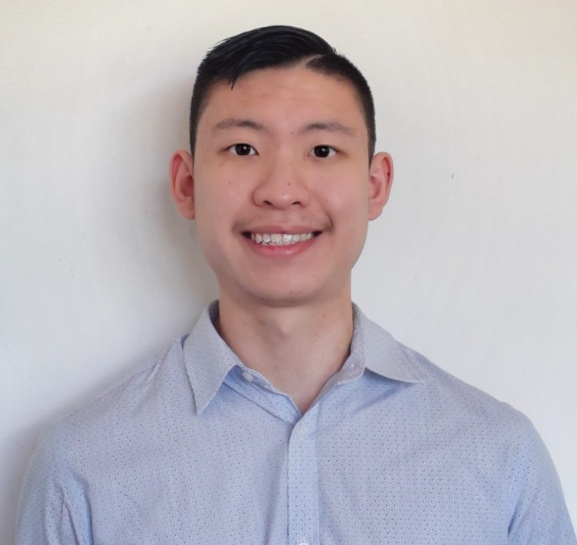

About
I'm Stanley, an aspiring software engineer. I am a driven, positive and growth-focused individual. I am currently undertaking the _Nology tech consultancy program. Presently, I am skilled in html, css and scss. I am an avid-problem solver, and I love all things related to finance and technology.
When i'm not programming, you'll find me hiking up a mountain somewhere or if it's the Summer, I'll be watching the cricket on my couch or fishing near a jetty.